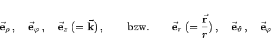

Inhalt Index DeskTop Bronstein

 Vektoranalysis und Feldtheorie Grundbegriffe der Feldtheorie Vektorfelder Koordinatendarstellung von Vektorfeldern
Vektoranalysis und Feldtheorie Grundbegriffe der Feldtheorie Vektorfelder Koordinatendarstellung von Vektorfeldern


Die Einheitsvektoren der Zylinder- und Kugelkoordinaten
|  | (13.17a) |
sind Tangenten an die Koordinatenlinien in jedem Punkt (s. die folgenden Abbildungen).
Sie bilden in der angegebenen Reihenfolge jeweils ein orthogonales Rechtssystem. Die Koeffizienten müssen dann als Funktionen der entsprechenden Koordinaten gegeben sein:
Beim Übergang von einem Punkt zu einem anderen ändern zwar die Koordinatenvektoren ihre Richtung, sie stehen aber stets senkrecht aufeinander.